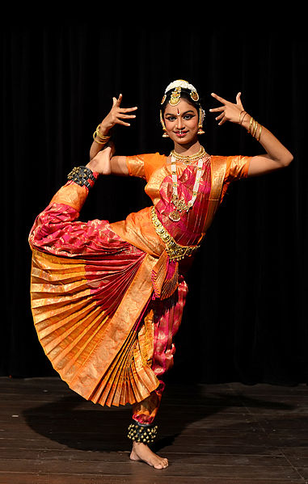
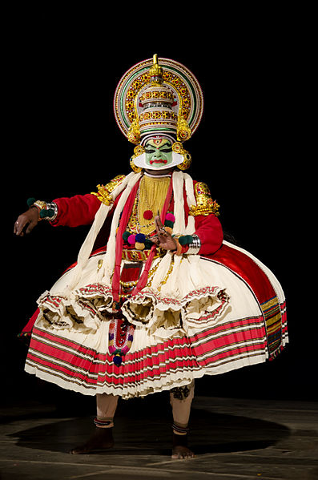
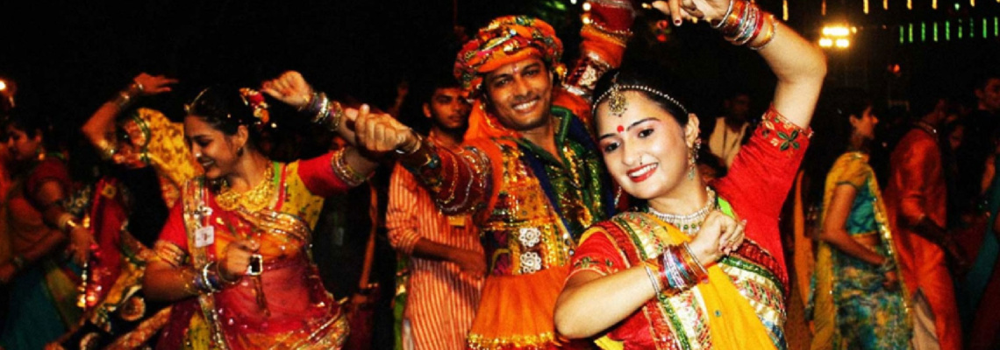
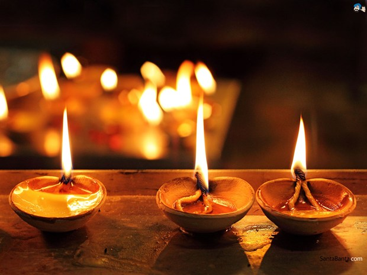
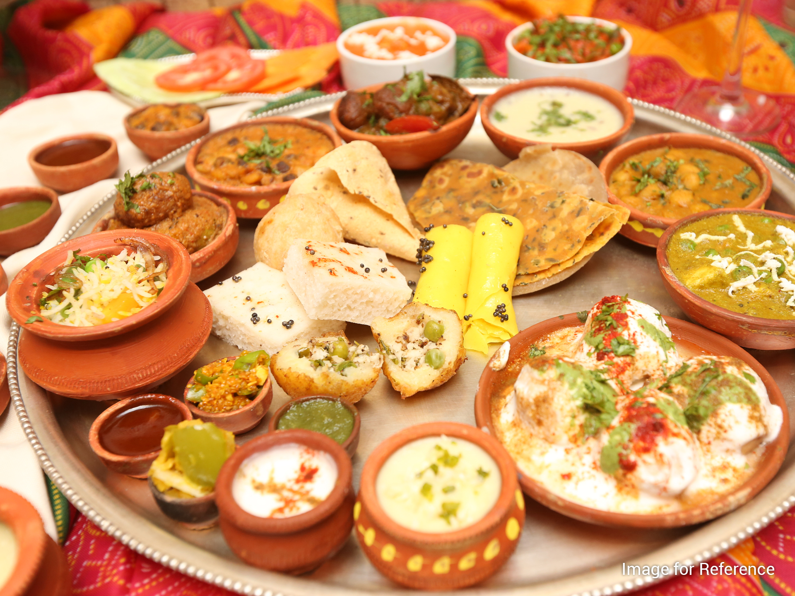
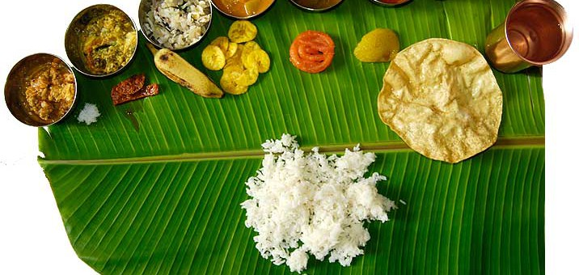

Dance
Festival
Food
Bharatnatyam
Dating back to 1000 BC, barathanatyam is a classical dance from the South Indian state of Tamil Nadu, practiced predominantly in modern times by women. The dance is usually accompanied by classical Carnatic music.Bharatnatyam is a major genre of Indian classical dance that originated in the Hindu temples of Tamil Nadu and neighboring regions.Traditionally, Bharatanatyam has been a solo dance that was performed exclusively by women,and expressed Hindu religious themes and spiritual ideas, particularly of Shaivism, but also of Vaishnavism and Shaktism.

Bharatanatyam and other classical dances in India were ridiculed and suppressed during the colonial British Raj era.In the post-colonial period, it has grown to become the most popular classical Indian dance style in India and abroad, and is considered to be synonymous with Indian dance by many foreigners unaware of the diversity of dances and performance arts in Indian culture.
Kathakali
Kathakali (katha, “story”; kali, “performance”) is a highly stylized classical dance-drama form which originated from Kerala in the 17th century.This classical dance form is another "story play" genre of art, but one distinguished by its elaborately colorful make-up, costumes and face masks wearing actor-dancers, who have traditionally been all males.

Kathakali primarily developed as a Hindu performance art, performing plays and mythical legends related to Hinduism.While its origin are more recent, its roots are in temple and folk arts such as Kutiyattam and religious drama traceable to at least the 1st millennium CE.A Kathakali performance incorporates movements from the ancient martial arts and athletic traditions of south India. While linked to the temple dancing traditions such as Krishnanattam, Kutiyattam and others, Kathakali is different from these because unlike the older arts where the dancer-actor also had to be the vocal artist, Kathakali separated these roles allowing the dancer-actor to excel in and focus on choreography while the vocal artists focused on delivering their lines.
Navratri
Navaratri (literally "nine nights"), also spelled Navratri or Navarathri, is a nine nights (and ten days) Hindu festival, celebrated in the autumn every year. It is observed for different reasons and celebrated differently in various parts of the Indian subcontinent.Theoretically, there are four seasonal Navratri. However, in practice, it is the post-monsoon autumn festival called Sharada Navratri that is the most observed in the honor of the divine feminine Devi (Durga). The festival is celebrated in the bright half of the Hindu calendar month Ashvin, which typically falls in the Gregorian months of September and October.
Diwali
Diwali, or Deepavali, is the Hindu festival of lights, which is celebrated every autumn in the northern hemisphere (spring in southern hemisphere).One of the most popular festivals of Hinduism, Diwali symbolises the spiritual "victory of light over darkness, good over evil and knowledge over ignorance".During the celebration, temples, homes, shops and office buildings are brightly illuminated.The preparations, and rituals, for the festival typically last five days, with the climax occurring on the third day coinciding with the darkest night of the Hindu Lunisolar month Kartika. In the Gregorian calendar, the festival generally falls between mid-October and mid-November.
Gujarati Thali
Gujarati cuisine is primarily vegetarian. The typical Gujarati thali consists of roti (rotlii in Gujarati), daal or kadhi, rice, sabzi/shaak, papad and chaas (buttermilk). The sabzi is a dish of different combinations of vegetables and spices which may be stir fried, spicy or sweet.Gujarati cuisine can vary widely in flavour and heat based on personal and regional tastes. North Gujarat, Kathiawad, Kachchh, and South Gujarat are the four major regions of Gujarati cuisine.Many Gujarati dishes are simultaneously sweet, salty (like vegetable Handvo), and spicy. In mango season, keri no ras (fresh mango pulp) is often an integral part of the meal. Spices also vary seasonally. For example, garam masala is used much less in summer. Few of Gujarati Snacks like Sev Khamani, Khakhra, Dal Vada, Methi na Bhajiya, Khaman, Bhakharwadi etc. Regular fasting, with diets limited to milk, dried fruit, and nuts, is a common practice.
Karnataka Dishes
A number of dishes, such as idli, rava idli, Mysore masala dosa, etc. were invented here and have become popular beyond the state of Karnataka. Equally, varieties in the cuisine of Karnataka have similarities with its three neighbouring South Indian states, as well as the states of Maharashtra and Goa to its north. It is very common for the food to be served on a banana leaf, especially during festivals and functions.
Karnataka cuisine can be very broadly divided into: 1) Mysore/Bangalore cuisine, 2) North Karnataka cuisine, 3) Udupi cuisine, 4) Kodagu/Coorg cuisine, and 5) Karavali/coastal cuisine. The cuisine covers a wide spectrum of food from pure vegetarian and vegan to meats like pork, and from savouries to sweets. Typical dishes include bisi bele bath, jolada rotti, badanekai yennegai, Holige, Kadubu, chapati, idli vada, ragi rotti, akki rotti, saaru, huli, kootu, vangibath, khara bath, kesari bhath, sajjige, neer dosa, mysoore, haal bai, chiroti, benne dose, ragi mudde, and uppittu.
